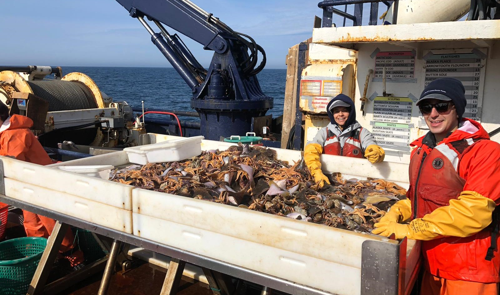

One of my main areas of interest is biogeography - where do we find marine species, what are the factors that control their distribution, and where might we find them in the future? As part of the ACLIM (Alaska Climate Integrated Modeling) series of projects led by researchers at NOAA’s Alaska Fisheries Science Center, I’m developing a suite of species distribution models for groundfish and crabs in the eastern Bering Sea region to support climate-ready fisheries management. The EBS is an extensive, shallow (<200 m deep) marine ecosystem spanning 200 – 400 km bordered on the east by the coast of Alaska, and supporting over 40% of the annual fisheries landings in the United States. The dynamics of the Bering Sea ecosystem are tightly coupled to the annual extent and location of winter sea ice and the closely associated oceanographic feature known as the “cold pool,” a sometimes extensive - and in some recent years, entirely absent - region of the Bering shelf with bottom temperatures below 2°C (Kotwicki and Lauth 2013, Ortiz et al. 2016). While the cold pool creates a refuge from predators for some species (notably juvenile walleye pollock, Gadus chalcogrammus, and snow crab, Chionoecetes opilio), the cold pool forms a biogeographic barrier to the movements of other species (such as arrowtooth flounder, Atheresthes stomas), creating structure in their spatial distributions which is otherwise unexplained by local environmental conditions.

Each year, NOAA surveys the Bering Sea at over 360 locations to collect the species abundance, length, growth, sex composition, and diet data necessary to build data-hungry stock assessment models and sustainably manage the stocks. Here I am on the 2023 survey helping to sort a haul of mostly seastars - it’s slimy work!
In this project, we’re using 40 years of annual scientific trawl survey data collected by NOAA at over 300 locations on the Bering Sea shelf, alongside dynamically-downscaled climate models to relate observed species presence/absence and biomass data to the environmental covariates that shape their distributions. Generalized additive mixed models are an ideal tool for this work, as they allow us to consider not just the nonlinear effects of local covariates such as temperature, oxygen, pH, depth, and sediment qualities, but also the barrier effect of the cold pool through the use of spatially-varying coefficients. We’ve built models for adults and juveniles of six species of groundfish (walleye pollock, Pacific cod, arrowtooth flounder, Pacific halibut, northern rock sole, and yellowfin sole) as well as snow crab and red king crab.
![Mapping environmental extrapolation is useful for making some baseline predictions about where and how much change we expect. This figure shows (a) the Bering Sea NOAA survey region under two CMIP6 climate scenarios (“low-end” SSP1-2.6 & “high-end” SSP5-8.5) and three earth systems models (CESM, GFDL, and MIROC), averaged between 2040-2059 and 2080-2099, with blue areas indicating novel combinations of pH, temperature, and oxygen, and red areas indicating completely new average conditions not seen in past decades. (b) shows the average environmental extrapolation (Mahalanobis distance) over time for presence-absence (binomial) and biomass (lognormal) models - clearly, thee’s a big difference between SSP1-2.6 and SSP5-8.5! Results are preliminary and subject to change.](extrap_joined.png)
Mapping environmental extrapolation is useful for making some baseline predictions about where and how much change we expect. This figure shows (a) the Bering Sea NOAA survey region under two CMIP6 climate scenarios (“low-end” SSP1-2.6 & “high-end” SSP5-8.5) and three earth systems models (CESM, GFDL, and MIROC), averaged between 2040-2059 and 2080-2099, with blue areas indicating novel combinations of pH, temperature, and oxygen, and red areas indicating completely new average conditions not seen in past decades. (b) shows the average environmental extrapolation (Mahalanobis distance) over time for presence-absence (binomial) and biomass (lognormal) models - clearly, thee’s a big difference between SSP1-2.6 and SSP5-8.5! Results are preliminary and subject to change.
Species distribution models can incorporated into management in numerous ways, including through multispecies- and ecosystem-based management frameworks, reducing bycatch and human-wildlife interactions, allocating resources and designing scientific surveys, and dynamically placing marine protected areas. One way we’re using them here is by propagating the estimates (and uncertainty) from these models into forecasts of spatial predator-prey overlap, with the goal of using overlap metrics to scale predator-prey interaction rates for some species in multi-species and ecosystem models used for management - “sneaking” spatial range forecasts into non-spatial models and allowing us to test the effect of range shifts on the sustainability of multi-species stocks. As part of this work, I’ve also developed a web app (using R’s Shiny library) to allow for the many outputs from these models to be easily explored and downloaded.